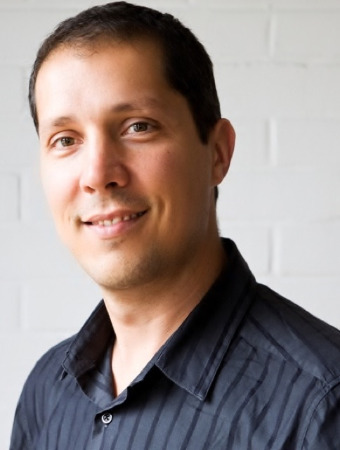

About

- Position
- Lead Researcher in knowledge graphs and hybrid AI, HUMOD group, LIST
- Based in
- Esch-sur-Alzette, Luxembourg
- marcos.dasilveira@list.lu
I work on making knowledge-based systems more collaborative and easier to understand, with hybrid AI that brings formal reasoning and statistical learning together.
My research draws on Semantic Web technologies, machine learning, generative AI and formal reasoning. It has served projects that extract key information from multimodal sources, keep knowledge graphs accurate as they evolve, turn complex clinical guidelines into formal representations, and connect personal competences with industry needs and existing training.
I designed the architecture of Luxembourg's eHealth platform, implemented by the eSanté Agency, which made secure sharing of medical data possible across the country. I was also a lead designer and developer of Dynaccurate, a technology for maintaining dynamic terminologies that led to a Luxembourg spin-off company.
I hold a PhD in industrial informatics from the University of Toulouse (2003) and taught in Brazil and Luxembourg before joining LIST in 2008.
- Ontologies
- Knowledge graphs
- Semantic technologies
- eHealth
- AI for education
- Large language models
Career
- 1998–2004
Pontifical Catholic University of Paraná, Brazil
Associate, then full professor.
- 2000–2003
PhD, Université Toulouse III, France
Industrial informatics: fault recovery for discrete control systems with Petri nets.
- 2004–2005
LAAS-CNRS, Toulouse, France
Postdoctoral researcher on fault detection for embedded aircraft systems, with Prof. Michel Combacau and Dr Louise Travé-Massuyès.
- 2006–2008
University of Luxembourg
Scientific collaborator on the RESIST project: software architectures for eHealth, with Prof. Nicolas Guelfi.
- Since 2008
Luxembourg Institute of Science and Technology (LIST)
Researcher, now lead researcher. Designed the architecture of Luxembourg's eHealth platform, implemented by the eSanté Agency, and co-created the Dynaccurate technology behind a spin-off.
Supervision
PhD students
- Julio César dos Reis2014
- Emna Mezghani2016
- Veruska Zamborlini2017
- Silvio Cardoso2018
- Jader Martins Camboim de Sáongoing
Postdoctoral researchers
- Cédric Pruski2010
- Rodrigo Bonacin2011
- Asma Ben Abacha2014
- Bah-Duy Dinh2015
- Thu Huong Nguyen2024–2026
Service to the community
- Chair, Data Integration in the Life Sciences (DILS)2017
- Guest editor, Future Generation Computer Systems: special issue on semantic technologies for the collaborative web2015
- Chair, Web2Touch track at WETICE2012, 2014
- Organiser, Medical Informatics Day workshops2012, 2014
- Chair, Web2Touch at NOTERE and at Web Intelligence2009, 2010
Working on discovering and evolving knowledge?
I welcome collaborations, project proposals and PhD or postdoc applications.